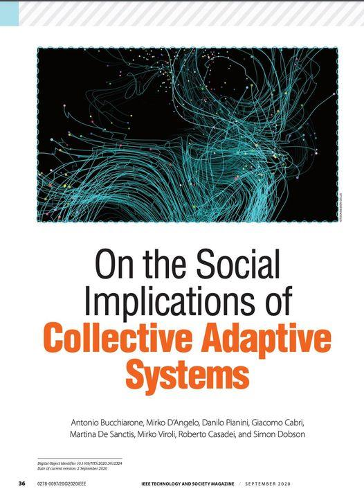

New paper on collective adaptive systems
Our paper "On the social implications of complex adaptive systems" was just published in IEEE Technology and Society Magazine.
This paper arose out of a workshop I attended at the Symposium on Self-Adaptive and Self-organising Systems (SASO) in 2018 in beautiful Trento, Italy. The basic issue of how to design systems whose components were both humans and computational processes, and how to understand the ways in which these systems might adapt to changing circumstances.

The main challenge, of course, is understanding how to integrate largely uncontrollable and unpredictable human behaviour into a system description: how to you capture what someone should do (but might not), and the implications for the system if they don't? (Not to mention how to decide whether they did or not.) This notion of "designing with and for" and quite fascinating, and ties into wider notions of how computer-aided human processes might behave: will they be more, or less, reliable and responsive than either fully automated or fully manual systems in particular scenarios?
Comments
Comments powered by Disqus